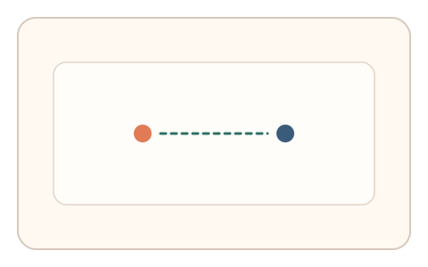
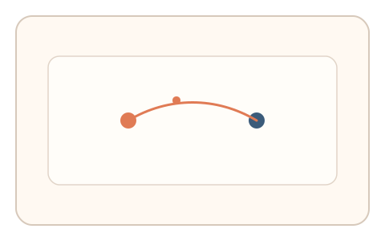
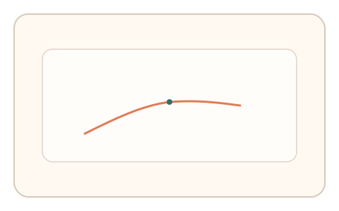

#56
视觉思考范式：扫描/错觉/全局-局部
已扩展
假运动路径选择
两点快速交替闪现后选择并描绘主观运动路径，利用路径形态与起笔延迟验证视觉补偿特征。
概念原文
两点快速交替闪现，用户选择“感觉移动的路径”并轻描其轨迹；记录路径形态与起笔延迟。
验证“视觉运动补偿”而非位置识别。
研究背景
在高频交替刺激中，人类会产生假运动知觉并补全路径。通过记录路径选择与描绘节奏，可获得稳定的知觉补偿特征。
核心机制
- 两点快速交替闪现形成假运动。
- 用户选择“感觉移动的路径”并轻描。
- 记录路径形态、起笔延迟与速度。
- 分析路径一致性与补全偏差。
用户流程
- 步骤 1：用户看到两点交替闪现。
- 步骤 2：用户描绘主观运动路径。
- 步骤 3：系统分析路径特征并判定。
判定信号
路径形态与曲率
真实假运动补全通常呈现平滑路径。
起笔延迟与描绘速度
假运动知觉形成后会快速描绘。
判定逻辑
结合路径平滑度、起笔延迟与一致性判定；过度机械或随机化判异常。
对抗面
- 脚本直接绘制预设路径
- 重放真实用户的描绘轨迹
防御与缓解
- 随机化点位与交替频率
- 引入轻微噪声与时间抖动
- 叠加微时序与轨迹抖动进行多信号验证
可达性与风险
提供路径选择按钮替代描绘模式，避免对绘制能力受限用户造成负担。
- 频繁闪现可能引起疲劳
- 刷新率影响假运动体验
可视化状态

状态 1：交替闪现
两点快速交替形成假运动。

状态 2：路径描绘
用户描绘主观运动路径。

状态 3：路径判定
分析路径形态与时序。
参考资料
Phi phenomenon
说明假运动知觉与路径补全。
Apparent motion
说明交替刺激引发的运动错觉。